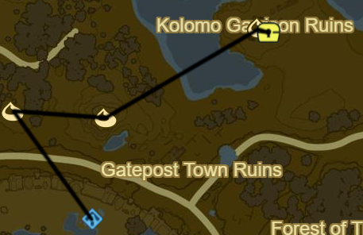

Dueling Peaks 1

Korok 017: Fairylights to NW
Korok 018: Pinwheel shooting to E
Korok 019: Rock beneath leaves to NE
Side Quest: EX Treasure: Ancient Mask
Chest outside ruins
Can make Master Mode safer and easier
Warp to Ja Baji Shrine
Korok 020: Rock Beneath Metal Door at ground level
Head to Outpost Ruins to NE
Luminous Talus to SE (2/40)
Korok 021: Flower order in Cave to SW
Korok 022: Rock atop Scout's Hill to E
Korok 023: Roll Boulder into hole just N
Korok 024: Rock circle to NE
Bosh Kala Shrine to N (5/120)
Korok 025: Fairylights atop flagpole N of Bosh Kala
Korok 026: Pinwheel shooting to N
Korok 027: Rock under boulder to E
Korok 028: Acorn under Owlan bridge to N
Korok 029: Rock atop tree to NE
Korok 030: Magnesis Rock in stump to SE
Korok 031: Jump 3 fences in a row to SE
West Nabi Lake Stone Talus to W (3/40)
Korok 032: Roll Boulder into hole to W
Korok 033: Pinwheel shooting to W
Korok 034: Fairylights atop flagpole to SE
Korok 035: Rock in South Nabi Lake centre to E
Dueling Peaks Tower to E
Stone Talus (Senior): E hillside (4/40)
Korok 036: Apple offering to E
Korok 037: Rock atop peak to S
Glide across and climb to Shee Vaneer Shrine(6/120)
Row 1
Row 2
Row 3
Row 4
Row 5
X
X
X
X
X
Korok 038: Apple offering to W
Glide back across to Shee Venath Shrine(7/120)
Row 1
Row 2
Row 3
Row 4
Row 5
X
X
X
X
X
Korok 039: Roll Boulder to E
Ha Dahamar Shrine to E (8/120)
Dueling Peaks Stable
Korok 040: Atop Dueling Peaks Stable
Side Quest: Wild Horses
If stuck tame a horse in advance and bring it near, then start the challenge and bring it back
Side Quest: Misko, the Great Bandit
Pay the 100 rupees, will complete later
Warp back to Shee Venath Shrine
Korok 041: Rock atop tree on Marble Ridge near Guardian Stalker
North Marble Ridge Stone Talus: Valley to E (5/40)
Korok 042: Lilies E of Talus
Korok 043: Rock Circle in centre of lake to SE
Korok 044: Rock Circle at Kakariko Bridge to SE
Follow path to Hestu
Side Quest: The Priceless Maracas
Get Maracas from camp
Korok 045: Fairylights atop tree E of Maracas camp
Return Maracas to Hestu
Korok 046: Magnesis Puzzle along path to Kakariko Village
Korok 047: Rock atop overhanging ledge along path
Korok 048: Rock atop pillar directly to S
Korok 049: Rock atop pillar to West
Korok 050: Apple Trees to W
Korok 051: Shoot emblem to NE
Korok 052: Rock on ledge to N
Korok 053: Offer apple outside Impa's
Talk to Impa
Main Quest: Free the Divine Beasts
Main Quest: Locked Mementos
Korok 054: Lilies outside Impa's
Side Quest: Arrows of Burning Heat
Inside Arrow Shop
Side Quest: Koko's Kitchen
Swift Carrot
Side Quest: Cooking with Koko
Goat Butter
Side Quest: Koko Cuisine
Raw Meat
Side Quest: Koko's Specialty
Courser Bee Honey
Side Quest: Playtime with Cottla
Side Quest: Flown the Coop
Mellie's Plum Garden(at night)
Shed to S of Village
In front of goddess statue
In front of shed by fire
Atop shed near E entrance
Up by Shrine
Atop clothes store
Ta'loh Naeg Shrine Overlooking Village (9/120)
Korok 055: Shoot Emblem at E exit
Warp back to Ha Dahamar Shrine
Take N then E path around Ash Swamp towards Fort Hateno
Next: [Hateno 1](03 - Hateno1.md)